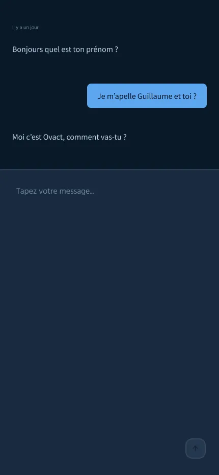
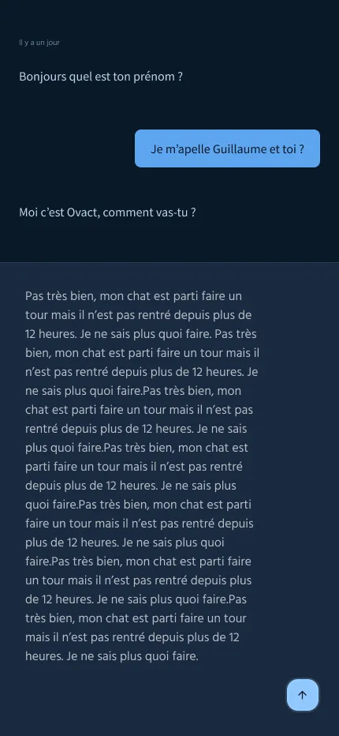
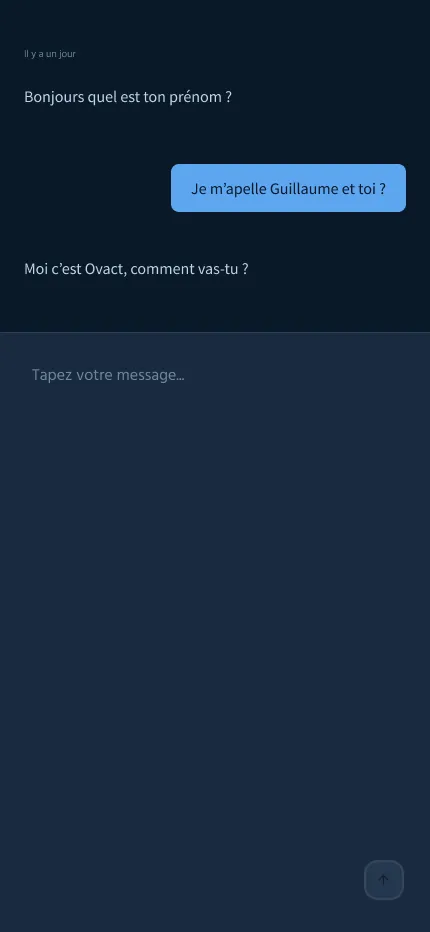
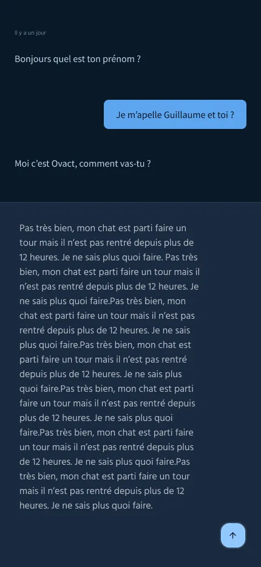

J'ai designé une porte d'entrée vers la santé mentale validée par un psychologue
Friction psychologique pour consulter un psy. Stigmatisation sociale, peur du jugement. Les gens ont besoin d'aide mais ne franchissent pas le pas.
Ovact comme porte d'entrée conversationnelle. L'utilisateur discute avec l'IA. Si tout va bien, parfait. Si Ovact détecte des signes, redirection vers un psy spécialisé (couple, anxiété, etc.).
Un psychologue réel a validé le concept et veut l'adopter pour sa pratique. Business model : % par consultation + dashboard avec données précises pour les psys.
Ovact est une porte d'entrée vers la santé mentale. Le vrai problème n'est pas technique, c'est la friction psychologique : la peur du jugement.
Pour briser cette barrière, j'ai utilisé le motion design comme levier de confiance. En donnant "vie" à l'IA (elle écoute, réfléchit, parle), on transforme une machine froide en un interlocuteur rassurant. C'est cette approche "Human First" qui a convaincu un psychologue d'adopter l'outil.
Timeline du projet (3 mois)
Discovery & Strategy
Recherche utilisateur, analyse concurrentielle, définition de la stratégie UX.
UX Design & Prototyping
Wireframes, architecture de l'information, tests utilisateurs préliminaires.
UI Design & System
Design haute-fidélité, création du Design System, documentation et hand-off.
Le vrai problème
Les gens ont besoin d'aide mais ne consultent pas. Stigmatisation sociale, peur du jugement, friction psychologique. Le problème n'est pas technique, il est humain. Comment créer une porte d'entrée accessible qui réduit cette friction ?
Le Modèle Stratégique
1. Le Flow : Conversation naturelle → Détection de signaux (détresse, anxiété) → Redirection vers un spécialiste.
2. Le Business : Ovact apporte des patients qualifiés (% par consultation) et fournit au psy un dashboard clinique (humeur, mots-clés) pour un suivi précis.
Research & Insights
L'analyse du marché et des entretiens utilisateurs ont permis d'isoler trois frictions majeures.
1. Le Tabou du "Psy"
70% des personnes en détresse n'osent pas consulter. La peur d'être étiqueté "malade" est le frein n°1.
2. L'Attente de Neutralité
Les utilisateurs se confient plus vite à une IA car elle ne juge pas. Ils cherchent une écoute sans filtre.
3. Le Besoin de Données
Les psychologues manquent d'infos objectives entre les séances. Ils veulent du contexte (humeur, sommeil) avant le RDV.
Stratégie : Transparence & Clarté
Porte d'Entrée Douce
Pas de jargon médical, pas de formulaire clinique. Juste une conversation naturelle pour briser la glace.
Redirection Intelligente
Détection active des signaux de détresse. Si le score dépasse un seuil, proposition immédiate d'un spécialiste adapté.
Valeur pour le Praticien
Le psy ne reçoit pas juste un patient, il reçoit un contexte : humeur, mots-clés, historique. Gain de temps énorme.
Wireframes
L'étape de wireframing a permis de tester rapidement différentes architectures d'information pour garantir que la complexité des données cliniques reste accessible et digeste.
Flow d'inscription : Confiance Immédiate
L'inscription n'est pas juste un formulaire, c'est le premier pas vers l'aide. Chaque écran est conçu pour rassurer : code d'accès sécurisé, validation claire, zéro friction. On ne demande pas de données médicales à l'entrée, on ouvre juste la porte.
 



Le Chat comme Porte d'Entrée
L'interface conversationnelle est le cœur du produit. Elle doit être invisible pour laisser place à la parole. Gestion des silences, zones de réponse claires, et transitions douces pour encourager la confidence sans intimider.
Humaniser la Machine : Listening, Thinking, Speaking
Pour qu'une IA soit acceptée comme confidente, elle doit "vivre". J'ai conçu des états distincts : elle écoute (pulsation), elle réfléchit (orbite), elle parle (onde). Ce feedback visuel crée une présence rassurante, pas juste un algorithme froid.
Design System : Inspirer la Confiance
L'identité "Deep Space" n'est pas un choix esthétique, c'est un choix psychologique. Le fond sombre apaise, le bleu néon guide sans agresser. La typographie Source Sans 3 assure une clarté absolue, car dans la santé mentale, l'ambiguïté n'a pas sa place.
Typographie
Espacements
Palette "Deep Space"
Interaction Design


Feedback visuel complet : User Speaking, AI Thinking, et AI Speaking.
Logotype
Le logotype Ovact incarne la fusion entre l'humain et l'intelligence artificielle.